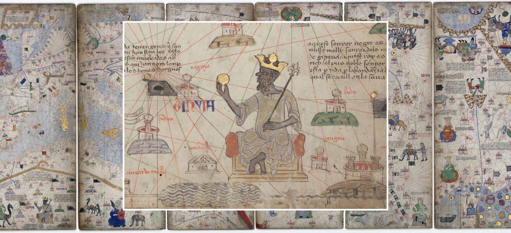

Finance · Money
만사 무사 — 순례길의 금은 왜 카이로에 흔적을 남겼을까
1324년의 여행과 1375년 지도에 그려진 왕

오래된 지도에 왕 한 사람이 앉아 있다. 왕관을 쓰고 손에는 황금빛 물건을 들었다. 지도는 산과 강의 위치만 알려 주는 것이 아니라 이곳에 어떤 부가 있다고 생각했는지도 보여 준다. 그 왕은 서아프리카 말리의 만사 무사다.
그의 이름을 먼 지역에 알린 중요한 계기는 1324~1325년의 메카 순례였다. 카이로를 거쳐 간 왕의 여행은 금과 선물에 관한 이야기로 오래 전해졌다. 한 사람의 이동이 어떻게 시장의 이야기와 지도의 이미지가 되었는지 따라가 보자.
1. 사하라 너머에 있던 부의 길
말리는 넓은 사하라를 사이에 두고 고립된 왕국이 아니었다. 금과 소금, 여러 물품을 교환하는 길이 북아프리카와 이어졌다. 교재는 말리의 힘을 이런 교역로와 금 생산 지역, 통치자의 관계 속에서 설명한다. 금이 있다는 사실과 그 금이 이동하는 길을 다루는 힘이 함께 중요했다.
사막은 오가기가 힘든 환경이었지만 교류가 없었던 빈 공간은 아니다. 사람과 낙타, 물자를 마련하는 지식이 길을 만들었다. 만사 무사의 순례도 이런 오랜 연결 위에서 이루어졌다. 갑자기 한 왕이 아무도 몰랐던 대륙 밖으로 나타난 이야기로 읽을 필요는 없다.
2. 종교적 여행이 외교의 무대가 되다
만사 무사는 무슬림 통치자로서 메카 순례에 나섰다. 그 길에 카이로를 방문했고 이집트의 통치자에게 중요한 손님으로 대우받았다. 신앙의 의무와 먼 지역 통치자들의 만남이 같은 여행 안에 놓였다.
왕이 많은 자원을 동원해 이동하면 여행 자체가 나라의 힘을 드러내기도 한다. 수행원과 짐, 선물은 방문자의 지위를 보이게 만든다. 다만 순례를 단순한 부의 과시만으로 줄이면 종교적 목적을 놓친다. 여러 동기가 한 길에서 함께 작용할 수 있었다.
3. 사람들은 무엇을 기억했을까
교재는 만사 무사가 카이로에서 금을 넉넉하게 쓰고 선물을 주었다고 설명한다. 큰 행렬과 많은 금에 관한 전언도 전한다. 숫자가 극적으로 클수록 정확한 현대 인구 조사처럼 받아들이기보다는 당시 왕의 부가 어떤 방식으로 기억되었는지 살펴볼 필요가 있다.
이번 글은 수행원의 수와 금의 무게를 확정하거나 현재의 달러 가치로 환산하지 않는다. 그런 계산은 가격과 자료의 조건에 따라 크게 달라질 수 있다. 중요한 것은 많은 사람이 그의 방문을 평범한 여행과 다르게 인식했고 그 이야기를 전했다는 점이다.
4. 금을 많이 쓰면 금의 값도 달라질까
교재는 카이로에 많은 금이 들어오면서 금의 가치가 낮아졌고 영향이 한동안 이어졌다는 기록을 소개한다. 귀한 금속도 시장 안에서 다른 물건과 교환되는 값이 있었다. 왕에게는 풍부한 재산이었지만 받는 도시에서는 거래 조건의 변화가 될 수 있었다.
다만 이 설명을 당시 모든 상품 가격을 정밀하게 측정한 통계처럼 읽을 수는 없다. 전해진 경제적 영향과 현대의 물가 조사 사이에는 자료의 차이가 있다. 금을 나누어 주었다는 선행이나 과시의 이야기만으로 끝내지 않고, 그 금을 받는 시장도 달라질 수 있었다는 점을 보는 것이다.
5. 금의 가치와 왕의 평판
여행에서 사용한 금은 사라진 비용으로만 남지 않았다. 말리의 부와 왕의 이름에 관한 이야기가 이집트 밖으로도 퍼졌다. 교재는 그의 명성이 스페인에서 시리아에 이르는 관찰자들의 관심을 끌었다고 설명한다. 재산을 가진다는 것과 그 재산이 알려진다는 것은 서로 다른 종류의 힘이었다.
여기에는 직접 보고 들은 사람과 다른 사람에게 전해 들은 사람이 함께 있었을 것이다. 모든 소문을 왕이 직접 설계한 홍보 계획으로 복원할 수는 없다. 그러나 넓은 교역망은 상품만 옮기지 않았다. 누가 부유하고 어떤 나라가 중요한지에 관한 평판도 길을 따라 이동했다.
6. 1375년의 지도에 왕을 앉히다
교재는 1375년의 『카탈루냐 지도첩』에 만사 무사가 등장한다고 설명한다. 왕관과 홀, 손에 든 금은 그를 부와 권력의 인물로 보이게 한다. 순례 뒤 수십 년이 지나도 말리의 명성이 지중해의 지리적 상상 안에 남았던 것이다.
이 그림은 만사 무사가 모델로 앉아 그린 실제 초상이 아니다. 지도 제작자가 전해진 지식과 상징을 통해 왕을 표현한 것이다. 인물의 얼굴이 얼마나 닮았는지보다 어떤 물건을 들게 했고 어느 지역에 배치했는지 살피는 편이 이 자료를 더 잘 읽게 한다.
7. 그림 속 황금과 기록 밖의 사람들
함께 실은 실제 자료는 지도첩의 여러 면과 왕의 모습을 묶어 놓은 구성이다. 중세 지도 원본의 한 면이 그대로 이 배치였다는 뜻은 아니다. 왕을 강조한 부분과 지리적 배경을 함께 볼 수 있도록 교재에서 구성했다.
화려한 왕의 이미지가 말리 주민 모두의 생활을 보여 주지는 않는다. 교역과 왕실의 부 뒤에는 생산과 운송에 참여한 사람들, 강제된 신분에 있던 사람들도 있었다. 왕을 통해 나라를 기억하되 그의 재산만으로 사회 전체를 설명하지 않는 것이 중요하다.
8. 순례길에서 시장과 지도로
만사 무사의 여행에는 신앙과 외교, 지출과 평판이 함께 있었다. 그가 사용한 금은 카이로의 경제에 관한 전언으로 남았고, 그가 대표한 부는 지도 위의 상징이 되었다. 한 번의 여행을 서로 다른 자료가 다른 방식으로 기억한 셈이다.
오래된 돈의 역사를 보면 숫자 밖의 세계가 열린다. 금은 얼마였는지뿐 아니라 어디로 갔고 누가 보았으며 어떻게 이야기되었는지도 중요하다. 만사 무사가 손에 든 황금은 한 왕의 재산을 넘어 사하라와 지중해를 연결한 길의 빛나는 표지로 읽을 수 있다.
이야기의 바탕이 된 자료
- OpenStax World History — 중세 사하라 이남 아프리카 ↗확인일 2026-10-31
만사 무사의 순례·카이로의 금·말리와 사하라 무역·카탈루냐 지도
- OpenStax World History — 카탈루냐 지도 속 만사 무사 ↗확인일 2026-10-31
14세기 지도와 확대 상세를 합성한 그림·권력의 상징